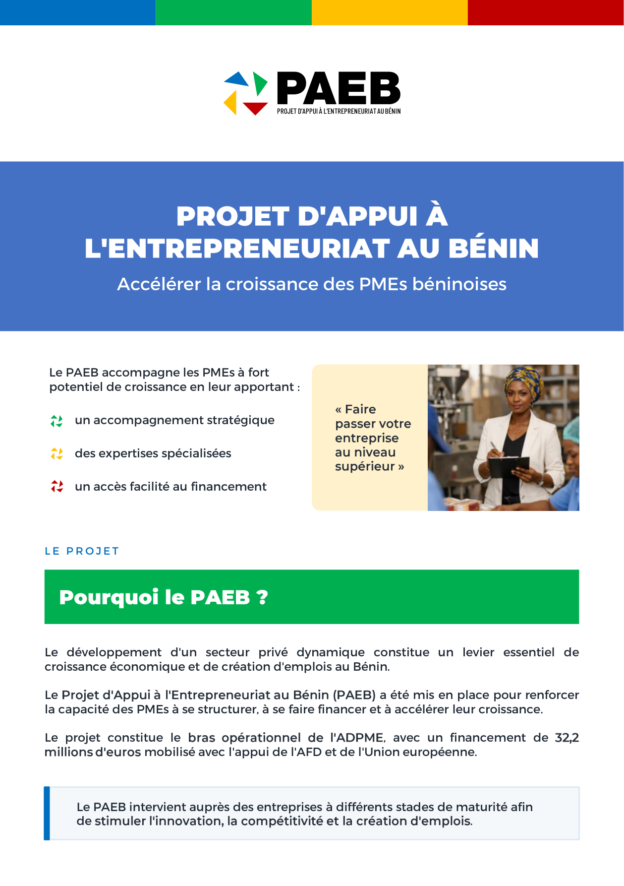
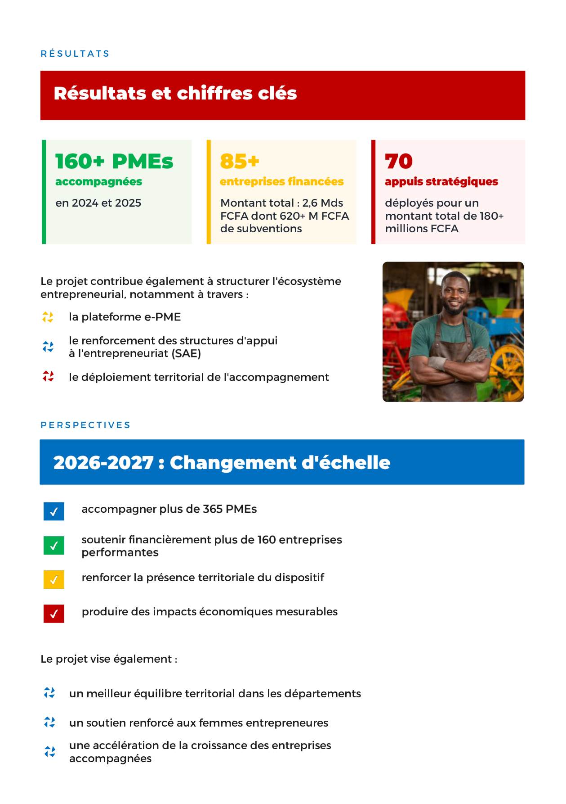

YouTube
PROJET PAEB AU BÉNIN : AFRICEREAL renforcée en matériel agricole
Reportage sur l'appui matériel à AFRICEREAL.
Voir la publication originaleMédias
Découvrez les entreprises bénéficiaires, les activités de terrain et les temps forts du programme.

